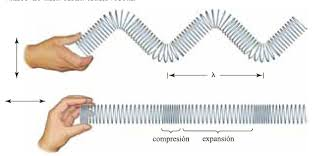
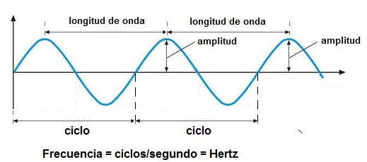
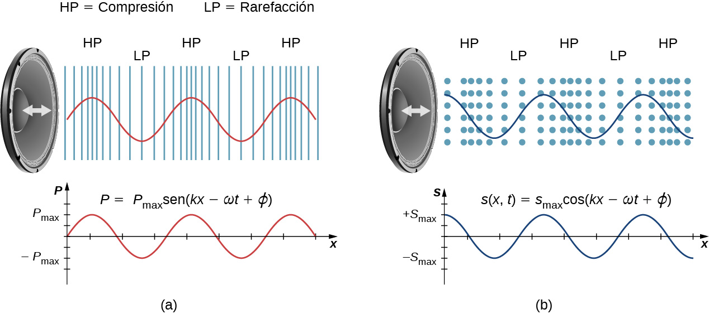

PARCIAL 1
parcial1
ONDAS LONGITUDINALES Y TRANSVERSALES
En las ondas longitudinales la vibración de los puntos del medio se produce en la misma dirección en que se propaga la onda, mientras que en las ondas transversales la vibración se produce en una dirección perpendicular a la de propagación de la onda.

CARACTERISTICAS DE LAS ONDAS
Para ondas transversales, la amplitud de la onda es perpendicular al movimiento de esa onda. Para ondas longitudinales, la amplitud y el movimiento de la onda son paralelos. La longitud de onda λ es la distancia entre picos o entre valles de una onda. La velocidad a la cual una onda viaja se llama velocidad de la onda.

ONDAS SONORAS
Una onda sonora es una onda longitudinal que transmite lo que se asocia con sonido. Si se propaga en un medio elástico y continuo genera una variación local de presión o densidad, que se transmite en forma de onda esférica periódica o cuasiperiódica. Mecánicamente las ondas sonoras son un tipo de onda elástica .

Un altavoz produce una onda sonora mediante la oscilación de un cono, lo que provoca vibración de moléculas de aire. En un altavoz vibra a una frecuencia y una amplitud constantes, lo que produce vibraciones en las moléculas de aire circundantes. Cuando el altavoz oscila de un lado a otro transfiere energía al aire, principalmente en forma de energía térmica. Pero una pequeña parte de la energía del altavoz se destina a comprimir y expandir el aire circundante, lo que crea presiones locales ligeramente más altas y más bajas. Estas compresiones (regiones de alta presión) y rarefacciones (regiones de baja presión) se desplazan como ondas de presión longitudinales que tienen la misma frecuencia que el altavoz: son la alteración que es una onda sonora (las ondas sonoras en el aire y en la mayoría de los fluidos son longitudinales, ya que los fluidos casi no tienen resistencia al corte. En los sólidos, las ondas sonoras pueden ser tanto transversales como longitudinales).
